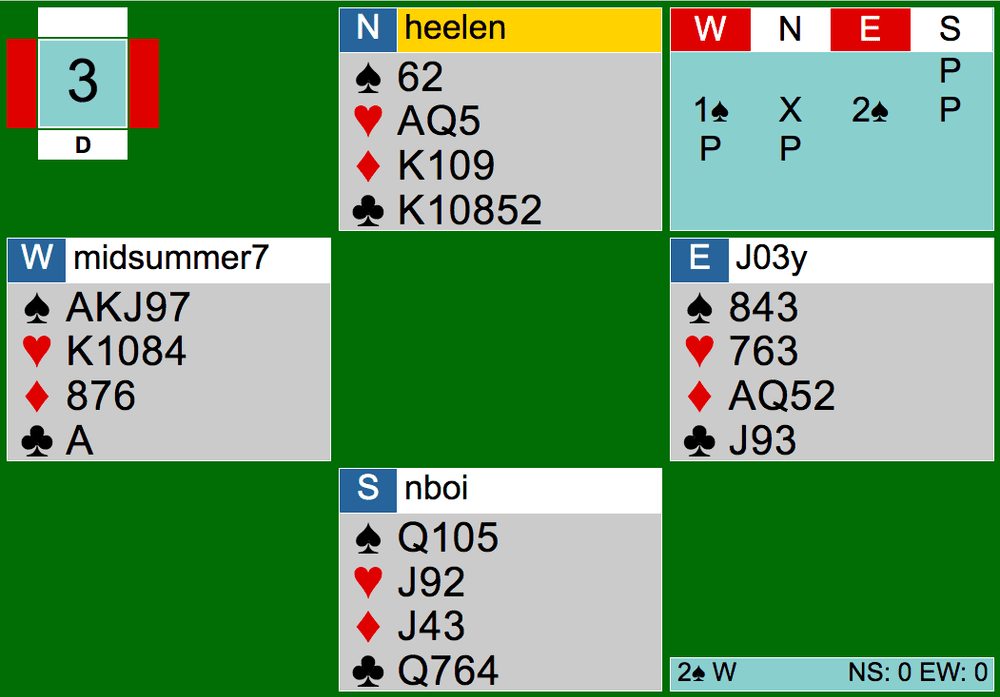
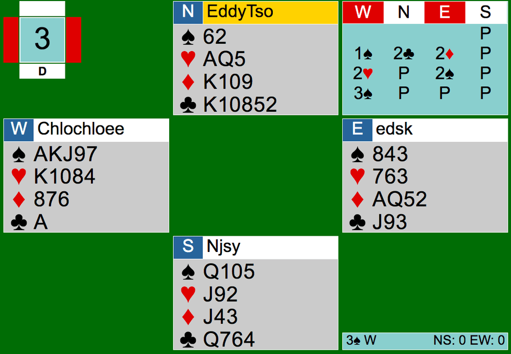

Today, we’ll be looking at Board 3. Here is the link to the tables: http://webutil.bridgebase.com/v2/tview.php?t=6664-1594173933&u=heelen .


At both tables, the bidding starts off with a 1S opening by West. This shows 5 spades and 13+ points. At my table (Table 1), North (me) decided to make a takeout double. Generally when you make takeout doubles, it shows length in the unbid suits. Since all my other suits are longer than my spade suit, the takeout double accurately describes my hand-- short in spades with a decent amount of points. East raised to 2S after my double and the bidding ended there.
At the other table, instead of North doubling, North made an overcall of 2C. I tend to overall a minor on the two level with 6 cards or a strong 5-card suit, so personally speaking, this is a bit aggressive considering the honors in North’s club suit. It is definitely a reasonable bid though. After the overcall, East responded with his 4-card diamond suit. The diamond suit is not worth showing. East should just bid 2S, showing minimal support.
Mini Lesson on Cue-Bidding
Actually, if East had a King (10 points total), East could have made a cue-bid. A cue-bid is when you bid the opponent’s suit. When responder cue-bids the overcaller’s suit, this cue-bid shows invitational values or more and support in opener’s suit. Here are some examples of how an auction may go:
1S - 2D - 3D: The 3D cue-bid shows 10+ points and spade support. This shows nothing about diamonds.
1H - 2C - 3C: This shows 10+ points, heart support, and nothing about the responder's club suit.
After the cue-bid, the opener would probably just rebid their suit on the three-level or in game, knowing they have a fit together.
The contract at Table 2 ended in 3S by West, one level higher than the other table’s contract.
The first few tricks were mostly the same; the opening lead was fourth best from North’s clubs followed by a successful diamond finesse made by declarer. Declarer did well in finessing the Queen of spades, losing no trump tricks. The difference in play came down to the second half of the game. When the third round of diamonds were played at my table, I (North) took the diamond trick with my King and played the King of clubs from KTx with J9 on the board. I then bluntly led another club. In my perspective, it did not feel right to lead from AQx of hearts. Either way, the club lead was a really bad move as it allowed West to pitch a heart loser on the winning Jack of clubs in the board, and it also gave West an entry to take the fourth set-up diamond. West was also able to pitch another heart on the winning diamond. EW lost one diamond, one club, and one heart. 2S making plus 2.
However at the other table, instead of setting up the fourth-diamond by losing the third round of diamonds, declarer tried to finesse the hearts. It didn’t end up working out. West eventually lost 3 hearts and the third diamond. 3S making.
It is always interesting how looking back at the boards, particularly the ones I played, I clearly remember my thinking process seemed reasonable at the moment, but now, it seems so impractical. Even though today’s analysis did not include a huge lesson, noticing the small mistakes like leads and pitches makes a huge difference in our bridge careers.